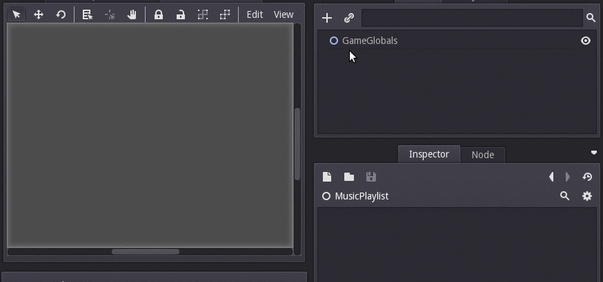
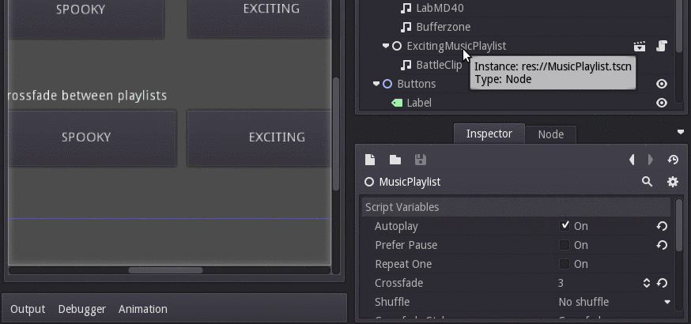

    <script src="https://modulojs.org/js/Modulo.js"></script>
    <Modulo>
        <Library namespace="x" src="/components/core.html"></Library>
    </Modulo>
    <script>Modulo.defineAll()</script>
<x-Page archivedid="14"pagetitle="Game dev with Godot: I wrote a Godot package to crossfade between playlists and make adaptive music">

<article class="content post tag-game-dev tag-tutorial tag-godot tag-music">
<h1 class="title">Game dev with Godot: I wrote a Godot package to crossfade between playlists and make adaptive music</h1>
<section class="post-content">
<p>For the <a href="../sawdust/index.html">puzzle game Sawdust</a>, I needed a powerful enough playlist and music mixing system so I could crossfade between tracks based on what's going on in the game, and so that I could make the soundtrack less repetitive by composing a collection of shorter ambient pieces that are played on shuffle. </p>
<p>So, I wrote <a href="https://bitbucket.org/michaelb/godot-music-mixer/">Godot Music Mixer</a>, which you can use in your projects!</p>
<p><a href="https://bitbucket.org/michaelb/godot-music-mixer/get/master.zip">Directly download the project (with an example) as a zip file here.</a></p>
<h2 id="basicusage">Basic usage</h2>
<p>Simply instance the <code>MusicPlaylist.tscn</code>, and add any number of <code>StreamPlayer</code> children for each individual track. Arrange them in any order you see fit, or just check "shuffle" to get a random order every time!</p>
<p></p>
<p>This is the simplest use: Basically, a playlist player resembling a desktop application.</p>
<blockquote>
<p><a href="http://www.gamasutra.com/view/feature/129990/defining_adaptive_music.php">Adaptive music in video games</a> is music that responds to what's going on. A way you can accomplish this is by writing some calm, ambient tracks that play when your character is just moving around, and then write some other more exciting tracks, then <a href="https://www.lifewire.com/what-is-crossfading-2438544">crossfade</a> between them based on events in the game, such as a certain number of enemies being nearby, a boss battle, and so on.</p>
<p>For the transition to be smooth, you'll probably want to crossfade. This is where the my package comes into play.</p>
</blockquote>
<h2 id="adaptivemusic">Adaptive music</h2>
<p>The example included in the repository shows how you can make adaptive music. In summary:</p>
<ol>
<li>Create one master MusicPlaylist: This is the one you will start/stop, and switch between "moods". Set autoplay = true, and "crossfade" to some appropriate amount, such as 3 seconds. </li>
<li>Create a playlist for your "calm" music called "Calm", and add StreamPlayers for each track. Set it to "prefer pause", so that when you go back from "action" mode. A cool effect is writing a collection of short ambient tracks, then setting "shuffle" and "crossfade", so the ambient songs are random every time. </li>
<li>Create an action playlist named "Action", and add a StreamPlayer for each track. </li>
<li>It will start in "calm" mode. To switch to action, do <code>get_node('MusicPlaylist').crossfade_to_child('Action')</code>. And as you may have guessed, to switch to calm do <code>get_node('MusicPlaylist').crossfade_to_child('Calm')</code> :)</li>
</ol>
<p></p>
<p>For full information, read the README at <a href="https://bitbucket.org/michaelb/godot-music-mixer/">the BitBucket page</a>. It's free / open source software, so contributions are of course welcome!</p>
<p>I hope my package is useful! It's free for any sort of use, but please let me know if you end up using it if you have the time. :)</p>
</section>
</article>
</div>

</x-Page>